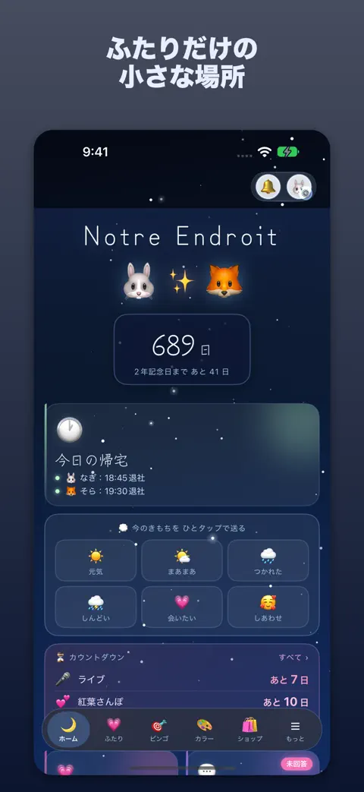
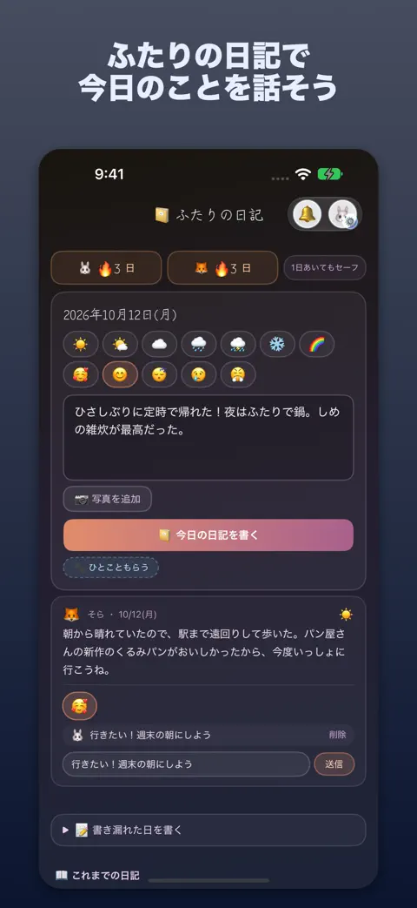
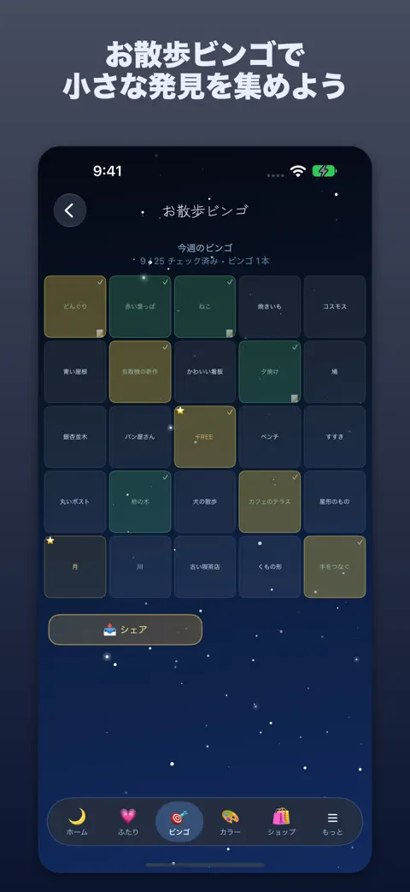

ふたりで使うアプリ（iPhone）
Notre Endroit
ふたりだけの、
小さな場所。
交換日記、帰る時間の共有、記念日までのカウントダウン、毎日のクイズやお散歩ビンゴ。恋人や夫婦のふたりだけで使うアプリで、書いたものはペアの相手にだけ見えます。
App Store で無料ダウンロード無料・広告なし／iPhone（iOS 18 以降）


アプリの画面
Notre Endroitとは？
Notre Endroitは、恋人や夫婦など、ふたりだけで使うアプリ。交換日記、帰る時間と今のきもちの共有、記念日のカウントダウン、毎日のクイズやお散歩ビンゴ。書いたものはペアの相手にだけ見えます。会員登録なし・広告なし。無料のiPhoneアプリ。
- 料金無料・広告なし
- 対応iPhone（iOS 18 以降）
- ジャンルくらし・記録





こんな人におすすめ
- 恋人や夫婦で、毎日のことを気軽に共有したい人
- 記念日や予定を、ふたりで数えたい人
- ふたりで遊べる小さな仕掛けがほしい人
遊び方は3ステップ
- ペアをつくる1人がペアをつくると、6文字の招待コードが出ます。
- 招待するもう1人がコードを入れれば、すぐに使えます。
- 共有する日記・帰る時間・今のきもち・記念日を、ふたりで共有。
特徴
- 1日1つふたりの日記きもちの絵文字・文章・写真
- あと何日カウントダウン記念日・誕生日・旅行まで
- 毎日ふたりのクイズ自分も答えると相手の答えが見える
- 券ポイントと券相手が作った券と交換（アプリの中だけ）
さいきんのアップデート
バージョン 1.0.14（2026年11月19日）
- 写真を送るときに、画質を保ったまま小さくするようにしました（送るのが速くなります）
ことばの説明
- 散歩ビンゴ
- 近くの場所や、道で見つけるもののお題でビンゴを作り、歩いて見つけたらチェックする遊び。 くわしく
どんなアプリ？
恋人や夫婦など、ふたりだけで使う小さな場所です。1人がペアを作り、もう1人が招待コードで入ると使えるようになります。書いたものは、ペアのふたりにだけ見えます。
- ふたりの日記：1日1つ、きもちの絵文字と文章・写真を残せます。相手の日記にスタンプやコメントを送れます
- 今日の帰宅・今のきもち：帰る時間や、今のきもちをひとタップで伝えられます
- Gravity：タップして気持ちをためるゲージ。ふたりともいっぱいになると…
- カレンダー・カウントダウン：ふたりの予定と、記念日や旅行まであと何日かを共有できます
- クイズ・ビンゴ・カラーハント：毎日の質問に答えたり、お散歩しながらビンゴのマスや同じ色の写真を集めたりして遊べます
- ポイント・ガチャ・販売所：アプリを使うとポイントがたまり、相手が作った「券」（マッサージ券など）と交換できます。ポイントはアプリの中だけのもので、お金では買えず、お金にも換えられません
- ほかに、ありがとう・デート・タイムカプセル・やりたいことリストなど。使う機能は「もっと」→「使う機能」でオン・オフできます
よくある質問
カップルで使える交換日記アプリは？
Notre Endroit は、恋人や夫婦のふたりだけで使うアプリです。交換日記、帰る時間や今のきもちの共有、記念日のカウントダウンがあります。広告なし、無料です。
無料ですか？
はい、無料でダウンロードして遊べます（広告なし）。App Store のページからどうぞ。
どの端末で使えますか？
iPhone（iOS 18 以降）で使えます。Android 版はありません。
はじめ方は？
アプリを開いて「はじめる」で、なまえと絵文字を決めて「ふたりの場所をつくる」を押すと、6文字の招待コードが出ます。相手はアプリの「招待コードで入る」にそのコードを入れてください。コードは24時間で切れます（作り直せます）。
会員登録やパスワードは？
いりません。アプリを開くと自動でログインします。そのため、アプリを削除したり iPhone を替えたりすると、同じアカウントに戻れないことがあります。
相手に見えるものは？
日記・コメント・予定・写真など、アプリに書いたものは、同じペアの相手にだけ見えます。ほかの人に公開されることはありません。
ペアをやめたい
「もっと」→「⚙️ 設定」→「ペアを抜ける」で抜けられます。ふたりとも抜けると、そのペアのデータはすべて削除されます。
アカウントを削除したい
「もっと」→「⚙️ 設定」→「アカウントを削除」で、いつでも削除できます。あなたが書いた日記・写真・ポイントなどのデータとアカウントが削除され、元には戻せません。
通知は届く？
相手の日記やありがとうなどは、画面右上の 🔔 お知らせに届きます。
お問い合わせ
不具合やご要望は、メールでお知らせください。お使いの iPhone の機種と iOS のバージョンを書いていただけると助かります。